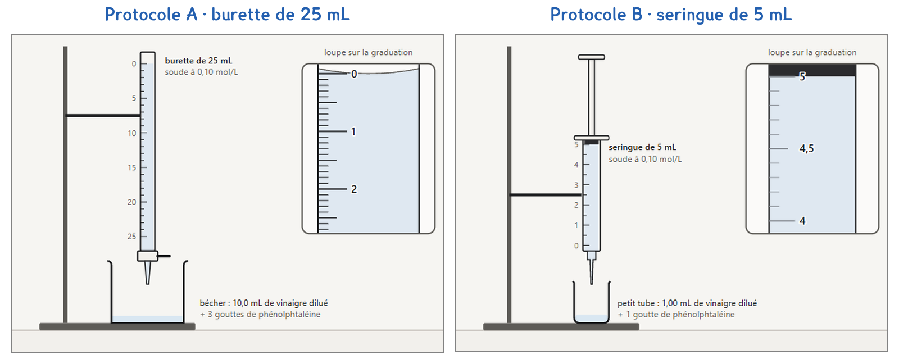

1re ou Tle Bac Pro · toutes sauf OBM · TP sur simulation SIM-16
Peut-on vérifier le degré du vinaigre aussi bien en jetant dix fois moins de produits ?
1 figure
Sujet. La bouteille de vinaigre blanc annonce « 8° » : 8 g d’acide éthanoïque pour 100 g de vinaigre. Un titrage à la burette le vérifie, mais chaque binôme remplit un bidon de déchets.
Problématique : peut-on vérifier le degré du vinaigre aussi bien en jetant dix fois moins de produits ?
La simulation. Ouvrir « Le titrage acide-base » : le fichier titrage.html, sur l’ENT ou la clé du professeur. Onglet « Indicateur coloré » pour A, « Petite échelle · seringue » pour B.

8° signifie 8 g d’acide pour 100 g de vinaigre. Un litre de vinaigre pèse 1 000 g.
a) Calculer la masse d’acide dans un litre, puis la concentration C (M = 60 g/mol).
m = ………… g d’acide par litre · C = m ÷ M = ………… ÷ 60 = ………… mol/L
b) Le vinaigre a été dilué dix fois. Calculer sa concentration Ca après dilution.
Ca = C ÷ 10 = ………… mol/L
La soude, à Cb = 0,10 mol/L, est versée dans le vinaigre dilué jusqu’à l’équivalence, repérée par la phénolphtaléine : le premier rose qui tient après agitation. On admet Ca × Va = Cb × VE.
Protocole A · la burette de 25 mL. On titre 10,0 mL de vinaigre dilué dans un bécher, avec trois gouttes d’indicateur. La burette se lit au bas du ménisque.
Protocole B · la seringue de 5 mL. Tout est dix fois plus petit : 1,00 mL de vinaigre dilué dans un petit tube, une goutte d’indicateur. La seringue, graduée au dixième de millilitre, sert de burette, et on compte les gouttes : 20 gouttes font 1,0 mL.
c) Compléter le tableau des deux protocoles, pour un vinaigre à 8°.
| Protocole A | Protocole B | |
|---|---|---|
| Vinaigre dilué titré, Va | 10,0 mL | ………… mL |
| VE attendu = Ca × Va ÷ Cb | ………… mL | ………… mL |
| VE attendu, en gouttes | ………… gouttes | ………… gouttes |
| Une goutte, en % de VE | ………… % | ………… % |
On choisit avant de toucher à la simulation ; le professeur peut imposer un protocole pour que la classe ait les deux.
d) Quel protocole prenez-vous ? Justifier en une phrase.
Je prends le protocole ……… parce que ……………………………………………………………………
e) Avant de mesurer : B jettera-t-il dix fois moins que A ? Entourer.
plus de dix fois moins · dix fois moins · moins de dix fois moins
Avant de commencer. Ouvrir titrage.html et cliquer l’onglet de votre protocole. Carte 1 : « Vinaigre blanc · 8° », « Phénolphtaléine », « Pipette jaugée de 10 mL ».
f) Schématiser votre montage ; nommer chaque solution et son volume.
Le schéma se dessine sur la feuille du TP.
g) Relever vos résultats dans votre colonne ; l’autre se remplit à la partie 4.
| Protocole A | Protocole B | |
|---|---|---|
| VE, au premier rose qui tient (mL) | ||
| Gouttes comptées | sans objet | |
| Bidon de récupération, en fin de titrage (mL) |
h) Avec votre VE, calculer Ca, puis C et le degré du vinaigre.
Ca = Cb × VE ÷ Va = ………… mol/L · C = 10 × Ca = ………… mol/L
Masse d’acide dans un litre = C × 60 = ………… g, soit un degré de ………… °
i) Le vinaigre est-il à 8°, à 5 % près ? Justifier avec votre résultat.
j) Avec un groupe de l’autre protocole : le bidon est-il divisé par dix ?
Compléter l’autre colonne du tableau g, puis expliquer l’écart avec votre réponse à e.
k) Citer deux difficultés d’un vrai titrage à la seringue, absentes ici.
l) Répondre à la problématique en deux phrases.
Ce que ce TP a établi, et qui vaut pour tout dosage :
À RETENIR
Un titrage à petite échelle donne le même résultat avec bien moins de produits : le volume à l’équivalence est dix fois plus petit, et la relation Ca × Va = Cb × VE reste la même.
Mais une goutte pèse plus lourd sur un petit volume. Choisir sa technique de dosage, c’est choisir la précision dont on a besoin, et pas plus, pour limiter les déchets.
Le vinaigre ménager annonce 14°. Prévoir VE pour chaque protocole, puis vérifier dans la simulation avec le flacon « Vinaigre ménager · 14° ». La burette de 25 mL suffit-elle ?
TP sur simulation de physique-chimie. Le travail se fait sur la feuille du TP : cette page en est la version à l'écran, sans les lignes à remplir. La simulation s'ouvre sans réseau et n'enregistre rien.